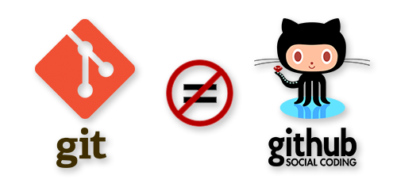

1) Les techniques de l'information et de la communication (TIC) :
Les techniques de l'information et de la communication (TIC) sont l'ensemble des outils utilisés
pour manipuler, traiter, produire, faire circuler, transmettre, modifier et échanger des informations,
ainsi que pour permettre une meilleure diffusion de l'information, la conservation des supports de stockage et la
présentation de l'information sous différentes formes. Les TIC résultent de la convergence de l'informatique, des télécommunications,
de l'électronique et de l'audiovisuel. Les TIC regroupent les matériels et logiciels qui permettent de communiquer, d'accéder aux sources d'informations, de stocker, de manipuler et de produire des textes,
des images, des sons et des vidéos, en utilisant les techniques de l'informatique, de l'audiovisuel, du multimédia et des télécommunications.
2) Catégories et objectifs :
Les TIC sont classées en trois grandes catégories.
La première est la téléinformatique, qui permet l'échange
d'informations numériques entre plusieurs systèmes informatiques,
incluant Internet, les serveurs, les réseaux et le dépannage. La deuxième
est la télécommunication, qui englobe les systèmes communicants qui ne sont pas nécessairement
informatiques, comme le traitement du signal, la transmission analogique, les centres d'appels, la
téléphonie mobile et le système GPS. Enfin, la troisième catégorie est l'électronique, qui regroupe les
composants et équipements grand public tels que les télévisions et lecteurs DVD.
Les objectifs recherchés des TIC sont la connectivité, la modularité, une implantation simple,
une utilisation facile et la fiabilité. La connectivité permet à plusieurs types d'ordinateurs utilisant des
logiciels différents de communiquer entre eux. La modularité consiste à utiliser un ensemble restreint d'appareils
généraux. L'implantation simple est une solution générale qui peut être installée facilement selon différentes configurations. L'utilisation facile est rendue possible grâce à la disponibilité d'outils de communication qui libèrent les utilisateurs de la connaissance de la structure du réseau. Enfin, la fiabilité est assurée par la détection et la correction des erreurs.
3) Composants de TIC :
Le domaine des TIC comprend deux parties : matérielle et logicielle.
La partie matérielle comprend différents appareils tels que les ordinateurs portables,
les télévisions, les téléphones portables, les tablettes interactives, les appareils photo numériques,
les robots, etc. Elle inclut également les stations de travail qui sont des machines capables d'envoyer des
données vers les réseaux tels que les PC, MAC, SUN Terminal X, les serveurs, etc.
La partie logicielle comprend les systèmes d'exploitation, les logiciels d'application et les logiciels
d'utilisation des différents composants matériels. Elle comprend également les réseaux d'internet ou mobiles.
4) Caractéristiques :
Les avantages des TIC dans une entreprise incluent : la rapidité dans les activités sans perdre de
temps en déplacements, la décentralisation du pouvoir grâce aux forums de discussion, un meilleur accès et
partage des informations pour une plus grande performance, une rationalité avantageuse pour l'entreprise dans le partage d'informations confidentielles, une mondialisation de l'activité grâce au tissu mondial de l'information, une répartition de l'information entre un grand nombre de stations
avec une qualité excellente, et une intensité dans la transmission et la réception des informations, à tout moment et de n'importe quelle région.
5) Initiation aux techniques de communication :
Les objectifs de communication sont les réactions attendues du récepteur.
Ils se définissent selon 3 dimensions: cognitive, affective et comportementale. Le système de communication comprend les partenaires (émetteur et récepteur),
les vecteurs (message et médias) et les fonctions (codage, décodage, réponse et feedback) ainsi que le bruit qui peut perturber la transmission des signaux.
On distingue deux types de communication : la communication institutionnelle (corporate) qui vise à communiquer sur l'image de marque de l'entreprise ou de l'institution et la communication commerciale ou de produit qui met en avant
les caractéristiques, performances et avantages du produit. Les schémas de communication sont la communication interpersonnelle, de groupe et de masse.
Enfin, les médias sont les moyens impersonnels de diffusion large et collective d'informations tels que la presse,
la radio, la télévision, le cinéma et Internet. Le multimédia, quant à lui, regroupe les techniques et produits qui permettent
l'utilisation simultanée et interactive de plusieurs modes de représentation de l'information (textes, sons, images fixes ou animées).
chapitre 2 : Les Réseaux Informatiques.
(Partie 2)
1) Réseau (informatique) Network :
Un réseau informatique est un ensemble d'ordinateurs et
de périphériques connectés entre eux, situés dans une
certaine zone géographique, pour échanger des informations
numériques selon des règles bien définies. La mise en réseau consiste à relier des ordinateurs pour qu'ils puissent partager des ressources. Les réseaux informatiques ont évolué pour intégrer non seulement des données, mais aussi la parole et la vidéo. Un réseau repose sur deux notions fondamentales : l'interconnexion, qui assure la transmission des données d'un nœud à un autre, et la communication, qui permet l'échange des données entre processus en cours d'exécution.
Le nœud représente l'extrémité d'une connexion et le processus représente le bout d'une communication dans un réseau informatique.
2) Les caractéristiques de base d'un réseau sont :
La topologie d'un réseau peut être physique ou logique,
définissant respectivement la manière dont les équipements
sont interconnectés et communiquent entre eux. Le débit, exprimé en bits/s, mesure la quantité de données numériques transmises par seconde. La distance maximale,
ou portée, dépend de la technologie utilisée. Le nombre maximum de nœuds pouvant être interconnectés est également une considération importante.
3) Quelques terminologies en réseau
Une station de travail est une machine capable d'envoyer
des données vers les réseaux. Un nœud peut être une station
de travail, une imprimante, un serveur ou toute entité adressable par un numéro unique. Un serveur est une entité qui dépose une fonction spécifique sur le réseau. Un paquet est la plus petite unité d'information pouvant être envoyée sur le réseau. Les réseaux homogènes se composent d'ordinateurs du même constructeur, tandis que les réseaux hétérogènes
comprennent des ordinateurs de différents constructeurs. Le débit
mesure la quantité de données numériques transmises par seconde (bps).
4) Éléments d'un reseau
Les ordinateurs nécessitent une carte de communication
et des logiciels tels que navigateur, client de messagerie
et serveur web. Les supports de LAN incluent les câbles à paires
torsadées en cuivre, les prises RJ45 et le Wi-Fi, tandis que le WAN utilise des lignes téléphoniques, l'ADSL et la fibre optique.
Les équipements d'interconnexion du LAN incluent le répéteur, le concentrateur et le commutateur, tandis que le WAN utilise des routeurs.
5) Classification des réseaux
Les réseaux peuvent être classifiés en fonction de différents critères :
Les réseaux sont classés selon leur portée :
-LAN (réseau local d'entreprise) est limité à une entreprise ou un site, avec des vitesses allant de 10 à 100 Mb/s.
-MAN (réseau métropolitain ou urbain) relie plusieurs LAN sur une distance de 10 à 25 km.
-WAN (réseau grande distance) couvre de plus grandes distances et est souvent public.
Il existe également d'autres types de réseaux, tels que PAN, WPAN, WLAN et SAN.
Les réseaux peuvent également être classés en fonction des services qu'ils offrent, notamment pour les réseaux utilisant la famille des protocoles TCP/IP :
-Intranet : le réseau interne d'une entité organisationnelle ou d'une entreprise
-Extranet : le réseau externe d'une entité organisationnelle ouvert vers l'extérieur
-Internet : les réseaux publics interconnectés à l'échelle de la planète
Il existe deux types de réseaux : les réseaux filaires (câble coaxial, paires torsadées, fibre optique, lignes téléphoniques)
et les réseaux sans fil (ondes radios, infrarouges, satellites, Bluetooth, etc.).
Les réseaux peuvent être de type Peer to Peer, où chaque ordinateur est un peu serveur et client, et les ressources peuvent être partagées librement, mais la sécurité est faible. Les réseaux Clients/Serveurs sont plus courants,
où la plupart des stations sont des clients et d'autres sont des serveurs spécialisés, et l'administration est effectuée par un administrateur.
6) Le type de topologie
Effectivement, la topologie d'un réseau est très importante pour déterminer la façon dont les ordinateurs communiquent entre eux et comment les données sont transmises. Il est intéressant de noter que la topologie peut être physique (câblage) et/ou logique (méthode de communication entre les ordinateurs).
La topologie en bus était très courante à une époque, mais elle a des limites en termes de
débit et de distance maximale entre les ordinateurs. La topologie en étoile est actuellement
la plus répandue, car elle permet une grande flexibilité et évite les perturbations du réseau en cas de panne d'un ordinateur. La topologie en anneau est moins courante, car elle est plus complexe et plus coûteuse à mettre en place, mais elle peut offrir des avantages en termes de sécurité
et de fiabilité. La topologie maillée est utilisée principalement dans les réseaux étendus pour garantir la redondance et la fiabilité.
chapitre 3 : Le Modèle OSI.
(Partie 3)
1) Les Composants matériel d'un Réseau informatique
sont des composants matériels essentiels permettant à un ordinateur
de se connecter à un réseau, comme Internet ou un réseau
local, et de transmettre et recevoir des données via des
protocoles de communication spécifiques tels que TCP/IP
Un switch est un composant matériel utilisé pour connecter et permettre
la communication entre plusieurs appareils sur un réseau local en utilisant des adresses MAC,
il vérifie et stocke les adresses MAC des appareils connectés dans une table de
correspondance, ce qui lui permet d'acheminerles données uniquement vers l'appareil
destinataire souhaité .Les switches peuvent
offrir des fonctionnalités avancées telles que la gestion des VLAN, la qualité de service (QoS)
et la gestion du trafic pour optimiser les performances et la sécurité du réseau.
Un hub est un composant matériel utilisé pour connecter plusieurs appareils
sur un réseau local (LAN) en transmettant les données à tous les appareils
connectés.Contrairement à un switch,
le hub ne possède pas la fonctionnalité de
table de correspondance pour envoyer les
données uniquement à l'appareil destinataire,
les données envoyées sur le réseau via un hub
sont reçues par tous les appareils connectés,
peu importe l'appareil destinataire. Les switches
ont remplacé largement les hubs en raison de
leur meilleure gestion du trafic réseau,
de leur communication plus rapide et sécurisée entre les appareils connectés.
2) Le Modèle OSI :
Le modèle OSI est un modèle de référence pour les communications de réseau qui se compose de
sept couches distinctes, chacune ayant des fonctions spécifiques liées à la communication de données
entre les appareils de réseau. Le modèle OSI est largement utilisé comme référence dans la
conception et la mise en œuvre de réseaux informatiques.Les sept couches du modèle OSI fournissent
une structure organisée pour la gestion des communications, facilitant ainsi l'interopérabilité et la
standardisation des protocoles de communication. Les sept couches du modèle OSI sont les
suivantes : , , , , ,
3) Le Modèle TCP/IP :
Le modèle TCP/IP est un modèle de référence pour les communications de réseau utilisé
dans la conception et la mise en œuvre des réseaux informatiques modernes . Contrairement
au modèle OSI, le modèle TCP/IP se compose de quatre couches principales pour la gestion
des communications : , ,,.
4) L'adressage :
Les communications dans un réseau obéissent à des règles :
qui permet d'identifier de manière unique les deux unités en communication.
qui définit les rôles endossés par les deux unités.
qui assurent l'échange des données.
Une adresse IP est un numéro qui identifie chaque ordinateur dans les réseaux, avec deux modes
d'adressage, IPV4 et IPV6.
Chaque paquet contient une adresse source sur 32 bits et une adresse destinataire
sur 32 bits.
Les adresses sont codées sur 128 bits et représentées textuellement en découpant le mot de 128
bits en 8 mots de 16 bits séparés par le caractère ":" en format hexadécimal.
5) L'adresse IPV4 :
Une adresse IPV4 est composée de deux parties : une adresse réseau et une adresse hôte. Pour
identifier un réseau, la valeur des bits de la partie réseau est la même. Le nombre de bits dans la
partie hôte détermine le nombre de machines possibles sur ce réseau.
--> Les différents types d'adresse IPV4: l'adressage IPV4 s'effectué selon les types suivants :
1) L'adresse réseau .
2) L'adresse de diffusion .
3) L'adresse hôtes .
4) Le masque de réseau et de sous réseaux .
chapitre 4 : Internet et Web.
(Partie 4)
1) Introduction
Le WWW est un système hypertexte public sur Internet qui
permet la consultation de pages web via un navigateur. Il a été inventé par Tim Berners-Lee
et Robert Cailliau après l'avènement d'Internet.
Un lien hypertexte permet d'ouvrir une nouvelle page en suivant une URL, qui est le nom
unique décrivant l'emplacement d'une ressource.
2) Aspects techniques du Web :
Les 3 mécanismes de base du Web sont :
Le Web utilise des URLs pour accéder à un ensemble de ressources et le protocole DNS pour
la localisation. HTTP est un protocole client-serveur de niveau applicatif, sans état. HTML
est un langage permettant la description de pages Web, incluant du texte, des images et des
liens hypermédias, basé sur la programmation déclarative.
3) Page web et site web :
Une page Web est un document multimédia décrit par HTML, stocké dans un
fichier HTML, et affiché par un navigateur. Elle peut être liée à d'autres pages via
des liens et regroupée dans un site Web, structuré en arborescence de dossiers et
fichiers, et accessible via une URL.
4) Création d'une page web HTML :
Un fichier HTML doit comporter au minimum ces 4 balises :
<html> ... </html>
<head> ... </>head>
<title> ... </title>
<body> ... </body>
<html> ... </html> : Délimite le début et la fin du document
<head> ... </>head> : Entête du document
<title> ... </title> : Titre du document
<body> ... </body> : Corps du document
<hn> ... </hn> :Titre de niveau n :1 à 6. Exemple <h1> Grand titre</h1>
<p> ... </>p> : paragraphe
chapitre 5 : Système de Gestion de Version.
(Partie 5)
Git est un logiciel de visioning crée par Minus Torvalds
, ce dernier est devenu un pilier pour les développeurs , primo car il permet de faire
beaucoup de choses qu’on va découvrir juste après. Et deuxio car ce logiciel est gratuit et libre d’accès.
Revenant à notre sujet principal Git offre beaucoup d’avantage ce logiciel est lourdement utilisé pour sa rapidité et sa flexibilité,
je m’explique Git est en résumant un système de contrôle de version qui permet de suivre l’historique des modifications
apportées au code, de restaurer les versions précédentes du code, de créer des branches de développement distinctes, de
faciliter la collaboration entre les membres de l'équipe de développement et de créer des sauvegardes de projets. C'est un outil
puissant pour la gestion de projet de développement de logiciels.
Git Hub est le plus grand hébergeur de dépôts Git du monde, GitHub est un
service public que chaque utilisateur de la plateforme peut voir, télécharger ou bien
contribuer au développement du code hébergé dans GitHub. Il ne faut donc pas
confondre, Git est en quelques sortes le Noyau de GitHub.

Comme j’ai dit bien précédemment Git est un logiciel 100% gratuit d’utilisation et peut s’installer très rapidement via cet onglet
Downloads rien de sorcier !
Une fois ce dernier installé son paramétrage sera un peu plus difficile, Après l'installation de Git, il est important de configurer
les informations d'utilisateur telles que le nom et l'adresse e-mail. La commande "git config" permet de voir et modifier ces
informations, et l'option "--global" permet de les appliquer à tous les projets Git. Les commandes à taper sont "git config --global
user.name" et "git config --global user.email". Pour vérifier que les informations sont enregistrées, tapez "git config user.name"
et "git config user.email".
Je parlerai un peu plus tard sur le terme de <dépôt>, pour l’instant attardons nous sur comment le créer, il existe deux façons la
première consiste à importer un répertoire existant dans Git et le second consiste à cloner un dépôt Git déjà existant
Git se différencie des autres systèmes de gestion de version, Git stocke les données sous forme d'instantanés ou de
"snapshots", ce qui permet de disposer de l'historique complet du projet localement. Cela permet à la plupart des opérations
d'être réalisées localement, rendant ainsi le travail beaucoup plus rapide et agréable. Les instantanés sont stockés dans une
base de données locale sur notre propre machine.
Dans Git, les fichiers peuvent être "suivis" ou "non suivis", avec un fichier "suivi" s'il est enregistré en base de données.
Lorsqu'on démarre un dépôt Git à partir d'un répertoire existant, tous les fichiers sont "non suivis" au départ. Chaque fichier
"suivi" peut avoir l'un des trois états : "modifié", "indexé" ou "validé". Pour ajouter un nouveau fichier ou pour modifier un fichier
existant, il doit être "indexé" pour être inclus dans le prochain instantané. Lorsqu'on prend un instantané, les fichiers faisant
partie de l'instantané sont à nouveau considérés comme "validés".
Git utilise trois zones de travail : le répertoire de travail, la zone d'index et le répertoire Git. Le répertoire de travail contient les
fichiers extraits de la base de données compressée située dans le répertoire Git. La zone d'index stocke les informations
concernant ce qui fera partie du prochain instantané, tandis que le répertoire Git stocke les méta-données et la base de
données des objets de votre projet. Le processus de travail consiste à travailler sur les fichiers dans le répertoire de travail,
indexer les fichiers modifiés ou créés, puis valider la version indexée des fichiers pour les ajouter au répertoire Git.
Le tutoriel utilise comme exemple un répertoire "projet-git" avec deux fichiers texte vides. La commande "git init" crée un sous-
répertoire ".git" avec les fichiers nécessaires pour fonctionner. "git status" montre que les fichiers ne sont pas sous suivi de
version. Pour indexer les fichiers, on utilise la commande "git add", qui peut être passée avec un nom de fichier, un nom de
répertoire ou un "fileglob". Le tutoriel utilise "* .txt" pour ajouter tous les fichiers avec l'extension ".txt". "git status" montre que les
fichiers ont été ajoutés à l'index et peuvent être validés avec la commande "git commit". Le message de validation doit être bien
documenté pour que les auteurs et les contributeurs puissent comprendre les modifications. "git status" montre que tous les
fichiers sont sous suivi de version.
Un dépôt Git est un espace de stockage où sont stockées les versions d'un projet. Il permet de gérer et de suivre les
modifications apportées au code source. La commande "Git clone" permet de cloner un dépôt Git existant localement.
Maintenant pour créer un dépôt sur GitHub, il faut utiliser la commande "git remote add origin" et "git push" pour envoyer les
fichiers. Une fois cela fait, les fichiers seront visibles sur le repo GitHub.
Le processus de gestion de versions avec Git implique de travailler sur un projet et de l'enregistrer dans un dépôt Git. En
travaillant sur le projet, des fichiers peuvent être ajoutés, modifiés ou supprimés, et ces changements doivent être signalés à Git
pour qu'il puisse les enregistrer et garder une trace de toutes les versions du projet. Pour enregistrer une modification de fichier
ou un ajout de fichier dans le dépôt Git, on doit utiliser les commandes git add et git commit. Il est important de noter que le
commit d'un fichier se base sur l'état de ce fichier au moment du git add, donc il faut bien penser à effectuer un git add avant
chaque git commit. On peut également utiliser l'option -a de la commande git commit pour valider les fichiers modifiés et déjà
sous suivi dans la zone d'index sans avoir besoin de les ajouter individuellement avec git add.
La commande git log permet de consulter l'historique des modifications réalisées avec Git, en affichant la liste des commits
effectués, avec leurs informations de base telles que l'auteur, la date et le message.
Git permet de revenir à un état précédent d'un projet enregistré grâce à la fonction "roll back". Pour cela, on peut utiliser la
commande git checkout -- nom-du-fichier ou la commande spécialisée git restore après un commit pour revenir à l'état du fichier
du dernier instantané Git en cas de modifications non désirées.
Créer une branche dans Git permet de développer et tester de nouvelles fonctionnalités sans impacter le projet de base.
Contrairement à d'autres systèmes de contrôle de version, Git ne crée pas une copie physique de l'intégralité du répertoire de
travail, mais plutôt un simple fichier contenant les 40 caractères de l'empreinte SHA-1 du commit sur lequel elle pointe. La
branche par défaut s'appelle "master" et est un simple pointeur vers le dernier commit effectué. Ainsi, créer une nouvelle
branche dans Git crée simplement un nouveau pointeur plutôt que de recopier l'intégralité du répertoire de travail.